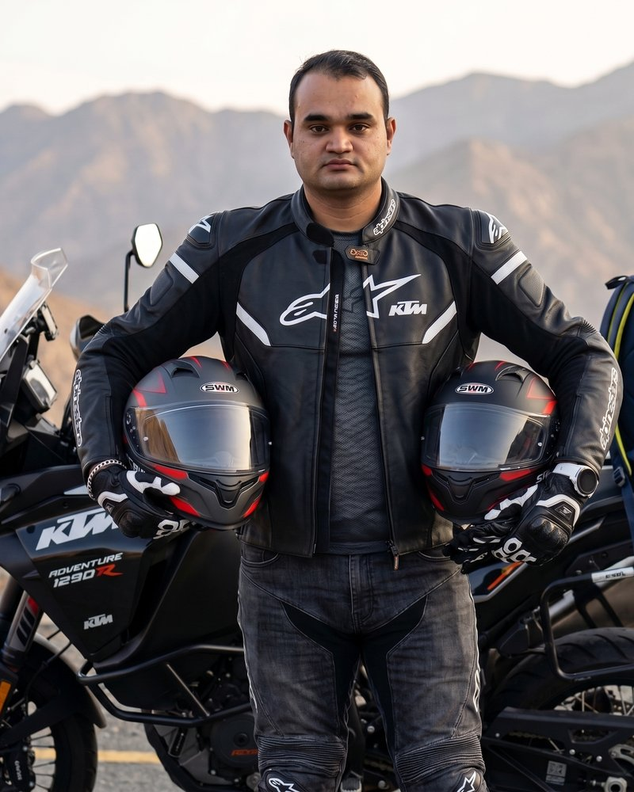

About Nandkishor Sharma & Nandkishor Blogs

Welcome to Nandkishor Blogs. I am Nandkishor Sharma — a career professional, writer, and dedicated motorcyclist with over a decade of continuous saddle time across the United Kingdom, India, and the United Arab Emirates. Online and on the road, I document rides, gear tests, and regional food culture under the handle @nk.rider.eats.
This platform was created to fill a glaring void in motorcycling media: providing authentic, real-world, engineering-backed advice specifically calibrated for riding high-performance motorcycles in the extreme thermodynamic environment of the Arabian Gulf.
1. The Two-Wheeled Journey: From Scotland to the Arabian Desert
My foundational relationship with high-performance motorcycling was forged in the wet, unforgiving climate of Scotland between 2015 and 2017. Navigating the single-track roads of the Scottish Highlands, carving the dramatic sweepers of the A82 through Glencoe, and pushing chassis limits at Knockhill Racing Circuit in Fife taught me the uncompromising physics of tyre adhesion, trail-braking, and mechanical empathy.
In Scotland, a minor mistake with cold tyre pressures or abrupt throttle inputs on moss-slicked tarmac meant an immediate dismount into a peat bog. That experience ingrained a permanent respect for roadcraft, situational awareness, and disciplined maintenance.
When I relocated to the United Arab Emirates, I encountered the exact opposite physical extreme: ambient summer temperatures soaring past 46°C, asphalt surface temperatures exceeding 65°C, high-speed desert crosswinds, and fine silica sand that acts like grinding paste on chains and brake calipers. Translating a decade of international road and track experience into actionable survival protocols for Gulf riders became the central mission of this blog.
2. The Current Machine: KTM 1290 Super Adventure R
My primary steed across the Emirates is the flagship KTM 1290 Super Adventure R — an open-class, 1301cc LC8 V-twin packing 160 horsepower and 138 Nm of torque. With WP semi-active suspension, Brembo radial calipers, a 6-axis Bosch IMU suite, and off-road capability, it serves as the ultimate high-speed laboratory for testing tyres, synthetic ester oils, electronic traction aids, and hot-weather touring luggage.
From pre-dawn weekend runs up the 60 switchbacks of Jebel Jais in Ras Al Khaimah to the 21 Grand Prix-engineered hairpins of Jebel Hafeet in Al Ain and the coastal corridors of Fujairah, every guide published here is backed by tens of thousands of real kilometres in the saddle — never speculative desk research.
3. Editorial Standards & Review Integrity
Too much modern motorcycle content consists of regurgitated manufacturer press releases, sponsored influencer fluff, or shallow spec-sheet comparisons written by individuals who rarely turn their own wrenches. At Nandkishor Blogs, we hold ourselves to strict editorial and safety standards:
- Zero PR Spin: If a piece of riding gear fails to breathe in 44°C Gulf traffic, or if an engine oil shears out of grade within 3,000 km, we document it honestly. We do not accept paid manufacturer reviews that compromise truth.
- Mechanical Accuracy: Every maintenance article — from measuring chain pin elongation with calipers to diagnosing brake disc runout and coolant cavitation — is cross-referenced with factory workshop service manuals and mechanical engineering principles.
- Safety as the Ultimate North Star: Public roads across Dubai, Abu Dhabi, and the Northern Emirates are not racetracks. We vigorously advocate for certified protective gear (ECE 22.06 helmets, CE Level 2 molecular armour), strict adherence to local UAE speed laws, comprehensive hydration science, and defensive riding strategies.
4. The Author Behind the Helmet: "आखिरी पन्ना" (The Final Page)
Beyond the visor and handlebars, I have spent years working in corporate human resources and organizational leadership. That professional journey gave rise to my published Hindi book, आखिरी पन्ना (Aakhiri Panna) — a reflective compilation of fifteen chapters exploring career transitions, professional resilience, human empathy, and the fundamental questions every professional confronts at the finish line.
Whether navigating complex organizational dynamics or setting up a motorcycle for an off-camber downhill turn, the governing principles remain remarkably identical: discipline, calm under pressure, relentless self-awareness, and respect for fundamentals.
5. Connect & Ride Along
I welcome conversations with fellow riders, local moto-clubs, and road safety advocates across the GCC and internationally. Whether you are looking for early-morning route GPX tracks out of Dubai, advice on purchasing your first superbike in the UAE, or feedback on hot-weather gear setups, feel free to reach out:
- Instagram: Follow weekly ride updates, early dawn routes, and local culinary stops at @nk.rider.eats
- Direct Email & Inquiries: Visit our official Contact Page for route suggestions, technical questions, and editorial inquiries.
- Location: Fujairah & Dubai, United Arab Emirates.
⚠️ Rider Safety & UAE Road Protocol
Public roads across Dubai and the UAE are not racetracks. Always observe local speed regulations, hold your lane through mountain passes, wear certified safety gear (ECE 22.06 / CE Level 2), and stay hydrated during warm riding hours. Ride within your limits.